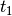

Motivations
The graphene_flake package models a tight-binding graphene flake submited to inhomogeneous triaxial linear strain [Sch13], [Pol14].
The lattice is defined by two sublattices labeled A and B, and three hoppings: ,  , , and three bond vectors : , , .
, , and three bond vectors : , , .
In presence of the triaxial linear train, the hoppings are given by:
The resulting strain-induced hopping pattern:
The class graphene_flake can
- obtain the spectrum (eigenenergies of the tight-binding Hamiltonian) and the probability densities of the states of the system (modulus squared eigenvectors of the Hamiltonian).
- select states by introducing a condition on the eigenenergies.
- Analyze the degeneracy and the wavefunction support of the pLLs.
- Analyze the evolution of the eigenenergies depending on the strength of the strain (analogous to the Hofstadter’s butterfly).
- Analyze the vortex-induced localized states appearing between pLLs.